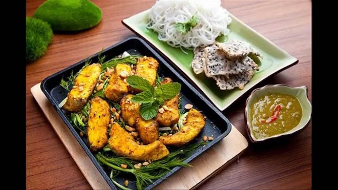

Mắm tôm phải được pha chế bằng cách vắt chanh tươi, thêm ớt, đánh sủi, tra thêm chút tinh dầu cà cuống, thêm vài giọt rượu trắng, một ít nước mỡ và đường.
Chả cá được bắc trên bếp, mùi thơm sực nức khắp phòng. Bỏ ít hành và rau thì là vào chảo. Khi rau chín, gắp chả cá cùng rau ra bát, kèm thêm chút bún rối, chút mỡ, chút mắm tôm và đậu phộng rang. Chả cá vừa đẹp mắt lại vừa ngon miệng. Màu của bát chả cá đủ cả xanh của hành rau, vàng sậm của cá, nâu trắng của lạc, đỏ của ớt, tím của mắm tôm vừa ngon với vị ngọt của cá, mùi rau và vị bùi của lạc rang. Do có nhiều mỡ nên khi ăn phải kèm theo cuống hành tươi chẻ nhỏ ngâm qua dấm pha loãng.
Chả cá Lá Vọng trở thành món ăn nổi tiếng khắp xa gần từ lúc nào không hay. Tương truyền vào những năm thời kỳ Pháp thuộc, ở số 14 Hàng Sơn (phố Lá Vọng ngày nay) có một gia đình họ Đoàn sinh sống, họ thường lấy nhà mình làm nơi cưu mang nghĩa quân Đề Thám. Chủ nhà hay làm món chả cá rất ngon đãi khách, lâu dần thành quen, những vị khách ấy đã giúp gia đình mở một quán chuyên bán món ăn này, vừa để nuôi sống gia đình, vừa làm nơi tụ họp. Lâu dần, hai tiếng "Chả Cá" được gọi thành tên phố.
Trong nhà hàng luôn bày một ông Lá Vọng - Khương Tử Nha ngồi bó gối câu cá - biểu tượng của người tài giỏi nhưng đang phải đợi thời. Vì thế khách ăn quen gọi là Chả cá Lá Vọng, ngày nay trở thành tên nhà hàng và cũng là của món ăn. Bí quyết làm chả cá chỉ truyền lại cho người con cả họ Đoàn.